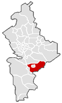
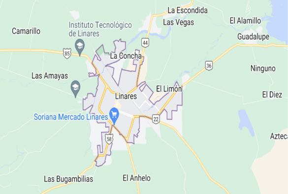
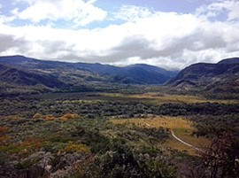
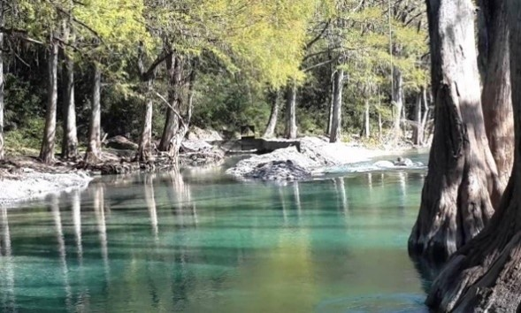
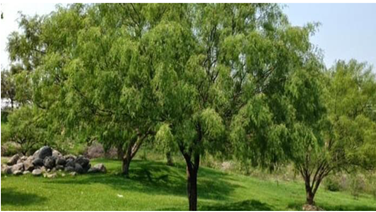

La región de La Crítica, también conocida como Región Críticola, es una importante zona agrícola ubicada en el estado de Nuevo León, en México. Esta región se extiende en los municipios de Montemorelos, Linares, Allende, General Terán y Cadereyta Jiménez, en el área noreste del estado. La región es reconocida por su clima y suelo propicios para la agricultura, lo que ha llevado al desarrollo de una industria agrícola vibrante y productiva. La Crítica se caracteriza por su topografía montañosa, con valles y laderas que ofrecen condiciones ideales para el cultivo de diversos productos.

UBICACIÓN
Linares es una ciudad del estado de Nuevo León en México, nombrado Pueblo Mágico. Ubicado en la parte central del estado, dentro de la "Región Citrícola". Su denominación actual proviene de su nombre antiguo de Villa de San Felipe de Linares, cuya fundación se realizó el 10 de abril de 1712. 356 m s. n. m.

Clima
Linares se encuentra en la región noreste de México, en el estado de Nuevo León, y su clima se caracteriza por ser subtropical. Los veranos suelen ser calurosos y húmedos, con temperaturas promedio que oscilan entre los 25 °C y los 35 °C. Los inviernos son más templados, con temperaturas promedio que rondan los 10 °C durante el día, pero pueden descender por debajo de los 5 °C durante la noche. La temporada de lluvias en Linares generalmente ocurre durante los meses de verano, de junio a septiembre, con precipitaciones moderadas a abundantes. Es posible que haya tormentas ocasionales durante este período.

Hidrografía
Su hidrografía está influenciada principalmente por dos ríos: el Río Ramos y el Río Santa Catarina. Estos ríos y sus afluentes atraviesan el municipio, contribuyendo a su sistema hidrológico. El Río Ramos es el principal río que atraviesa Linares. Nace en el estado de Coahuila y fluye hacia el sureste a través de varios municipios de Nuevo León, incluido Linares. A medida que el Río Ramos atraviesa el municipio, recibe el aporte de varios arroyos y corrientes menores. El Río Santa Catarina también tiene una influencia significativa en la hidrografía de Linares. Este río nace en la Sierra Madre Oriental y fluye hacia el norte, pasando cerca del municipio de Linares. Aunque no atraviesa directamente Linares, el Río Santa Catarina es importante debido a su cercanía y a su papel en la hidrología regional.Además de estos ríos, Linares cuenta con algunas presas y embalses que se utilizan para el almacenamiento de agua y para actividades recreativas. Algunas de las presas más importantes en el municipio son la Presa Cerro Prieto y la Presa El Cuchillo, esta última ubicada aguas arriba del municipio, en el Río Ramos. Es importante mencionar que la hidrografía de Linares está sujeta a variaciones estacionales y a las condiciones climáticas. Durante la temporada de lluvias, los ríos y arroyos pueden experimentar un aumento en su caudal, lo que puede dar lugar a inundaciones o desbordamientos en algunas áreas. Por lo tanto, es importante estar atento a las condiciones meteorológicas y seguir las recomendaciones de las autoridades locales en caso de eventos hidrometeorológicos.

Orografía
En cuanto a su orografía, es suave mostrando una transición entre la sierra al norte y la zona abierta de la campiña en el sur. El punto de mayor elevación del término municipal es el Paño Pico con 552 metros. Linares tiene un clima mediterráneo continentalizado con una elevada amplitud térmica, superior a los 20 ºC
